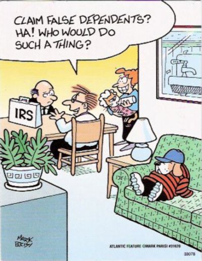
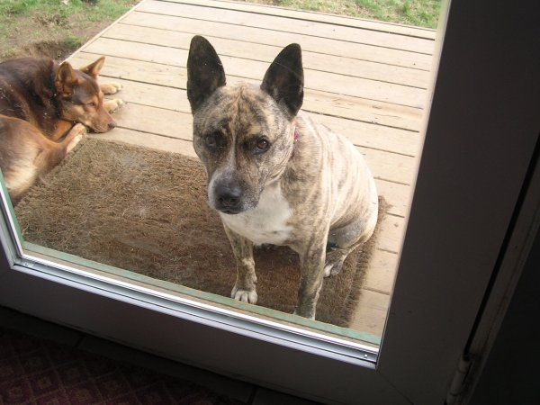
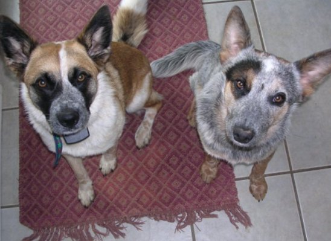

Monday, April 30, 2007
IN MORDOR-ON-THE-POTOMAC wheels begin to turn. Hardy County lies in their path.
Posted by Claire @ 02:28 PM CST [Link]
Sunday, April 29, 2007
I CAN’T BECOME FREE BY DESTROYING THINGS
Violence is THE tool of the state. In the end, everything the state does rests on the promise of using violence and coercion to achieve its goals.
Silver here. Fellow blogista Thunder’s recent post, and a post by his partner Lightning, spoke eloquently about how fighting government and all its innumerable evils tends to give us exactly the opposite of what we want. I would add just one thought to their eloquent words: It's not fighting the government at the root of the problem, it is fighting. Resorting to confrontation and violence brings us down to the level of the state.
Recently we saw the power of the internet used to destroy the career of Jim Zumbo. His thoughtless outburst aroused hundreds, perhaps thousands of firearms enthusiasts to email his sponsors, most of whom promptly dropped him. But when it was over, were we really any freer?
I want more freedom. I want to build up people and institutions that respect and nourish sustainable freedom and the qualities of free men. I have renounced the use of violence to achieve my goals.
I know a way. It’s a small way, a humble way, but ultimately it is more powerful than boycotts or even bullets. What’s more, it’s something we all do every day. Adding just a tiny bit of thought and care can change a chore into a tool to build freedom.
It’s called trade.
[more]
Posted by Silver @ 09:02 AM CST [Link]
Thursday, April 26, 2007
HEY! THE RECENT MOVIE, SHOOTER appears to be based on one of my favorite novels, Stephen Hunter's Point of Impact.
It stars Mark Wahlberg who -- whatever you might say about his political attitudes -- is one of the best and most underappreciated actors in the business. (I saw him just last night in The Departed, a movie that simply burst with great acting, and he absolutely owned every scene he appeared in.)
He plays sniper Bob Lee Swagger in what sounds like an updated version of Hunter's story (here Swagger is a veteran of an illegal war in Ethiopia instead the second most prolific Marine sniper in Vietnam after a fictionalized "Carl Hitchcock"). Unfortunately, critics don't seem to have liked it. Oh well. Still worth a night of Netflix ...
Posted by Claire @ 12:44 PM CST [Link]
Wednesday, April 25, 2007
THIS IMAGE FROM JPFO HAS HAUNTED ME since I first saw it several weeks ago. For one thing, it's just a great graphic. But also, a great idea.
Why do 100 million (or 80 million, or 50 million, or whatever) gun owners allow themselves to be terrorized by such a small band of thugs? (2300 is the number of ATF employees dedicated to infringing on the Second Amendment.) I'm sure if you asked around the answers would range anywhere from simple ignorance, arrogance, or apathy ("They'll never come for my trap gun") to terror ("Yeah, but those 2300 have the whole fedgov behind them" or "Yeah, but when even a dozen of those bastards come after you, you're outnumbered").
In either case, the ATF -- and the whole brutal, unconstitutional, control-freaking federal government wins while we lose. Just because we don't exercise our own obvious power. If a mere one percent of gun owners said, "No more!" the entire ATF could be exiled to the North Pole, where global warming could eventually send them down below where they belong.
But we can't gather our strength.
Still. That great graphic by Brian Axtell is a powerful something to think about. Here's an example of "the power of the little people" -- and I warn you this is seemingly unrelated and has to do with dogs: [more]
Posted by Claire @ 02:31 PM CST [Link]
Tuesday, April 24, 2007
"DOGS AND LOVE." by Glen Allport. Yeah ...
By being so vividly loving and affectionate, dogs remind us that our "sameness" with other beings provides a natural foundation for love. By being so loving despite also being vicious carnivores, dogs offer hope that even a species as violent as our own can choose love and peace over hatred and violence. By the example of well-treated puppies growing into healthier and less violent adult dogs (than their badly-treated cousins), dogs also point the way to such an improvement in the human condition.
Posted by Claire @ 04:30 PM CST [Link]
Monday, April 23, 2007
THE ENCOURAGING THING ABOUT THIS is that it comes from a leading light of the left:
When the mass murder session began in the engineering building the police cowered behind their cruisers till Cho Seung-Hui finished off the last batch of his 32 victims, then killed himself. Then the police bravely rushed in, started sticking their guns in the faces of the traumatized students, screaming at them to freeze or be shot. Similar timidity was on display in Columbine, where Harris and Klebold killed students in the library over a period of 15 minutes and then committed suicide. The police finally mustered up the nerve to enter the library over two hours later.Years ago campus police were greeted as a welcome alternative to regular cops hassling students and creating trouble.. But now they mostly are regular cops, hassling students, dishing out speeding tickets like the one the Virigina Tech campus police issued Cho. They were good at spotting a car going a few miles over the limit, bad at protecting the campus from a smouldering psychotic.
The Virginia Tech terrible massacre should prompt a radical review of the utility of SWAT teams which now infest almost every community in America. Each time there's a hostage taking or a mass murderer on the rampage, one sees the same familiar sight: overweight SWAT men, doubled up under the weight of their costly artillery, lumbering along in their body armor and then hiding behind trees or cars or walls while the killer goes about his business. SWAT teams perform most efficiently when shooting down unarmed street people menacing them with cellphones.
The answer is to disband SWAT teams and kindred military units, and return to the idea of voluntary posses or militias: a speedy assembly of citizen volunteers with their own weapons. Such a body at Columbine or Virginia Tech might have saved many lifes [sic]. In other words: make the Second Amendment live up to its promise.
Posted by Claire @ 05:10 PM CST [Link]
COULD THE KEYS TO HARDYVILLE'S FUTURE be clutched in the fists of big men unknown?
Posted by Claire @ 04:42 PM CST [Link]
Friday, April 20, 2007
Have you ever noticed that Claire can make anything sound deeply significant and freighted with all manner of soul-transforming profundity?
It's me; PSM. Hi.
Ever since I can remember, I have loved going out after heavy rains to see how the rivers, streams, brooks and dams have swollen. It so happens that we just had such a period this past week, and it also just so happens that I am blessed to live in an area with a superabundance of streams, rivers, brooks and dams. Early in the day I had seen an upside down kayak (presumably unoccupied) go racing downstream by my house; I knew it was going to be a good day. A day filled with fresh insight, and meaning, and all kinds of, you know, deep, good stuff.
It's just a short walk down to the first of these dams, so I set out in the early evening to tour the waterways. Well I got to the first dam, and it was spectacular. It's not far from there to the next dam, so I kept walking. The second dam is bigger than the first, and it was even more spectacular.
Every step I took was empowered with the vigor of life renewed, every bend in the road seemed heavy with the fullness of spring and fertility. One thing kind of led to the other, and before I really thought about what I was doing, I had walked five miles or so downstream. And it was getting dark.
[more]
Posted by Penguinsscareme @ 08:43 AM CST [Link]
Thursday, April 19, 2007
LAST CALL FOR CHEAP AK MAGS!
Blogispondent Ian here. If you've been dithering over whether of not to pick up some surplus AK mags from Sportsman's Guide, you'd better make a decision quickly. They are very nearly out - the supply probably won't last to the weekend. I don't know if they'll be getting more in, but I doubt it, given the circumstances of where the batch came from. Cost is about $8/mag shipped - you won't find a much better deal anywhere.
Posted by Ian @ 02:41 PM CST [Link]
Wednesday, April 18, 2007
Reports of My Death are (Mildly) Exaggerated. Debra here. After nearly a decade in the freedom movement, I am cheerfully -- nay, gleefully -- re-entering the society of sheeple.
I was recently head-hunted by a company whom I'll refer to as Globex Corporation. I took the job and will start within a few weeks.
"But you're self-employed! You're not a wage-slave! You're free! How can you give that up?"
One word, baby: benefits. [more]
Posted by Debra @ 05:49 PM CST [Link]
Tuesday, April 17, 2007
YOU ALREADY KNEW THIS, DIDN'T YOU? The new Hardyville column, episode III of "Under Siege," is up at Backwoods Home. The feds have ... oh well, read for yourself. The news is too dire to repeat.
I'm a little late with posts. Limited Net time lately, sorry. And a weird combination of peacefulness in my real life and anger at life-in-the-news. Hard to put together coherent thoughts when the brain is being pulled in two directions at once.
Posted by Claire @ 03:55 PM CST [Link]
THE SECRET GARDEN. Mickey Creekmore, on his very useful Survival Strategies blog, takes a few tips from the cannabis trade and from ancient history to tell us how to create a secret survival garden.
Hm. I always have wondered how we're supposed to stay awake long enough, after TSHTF, to guard our tomatoes and zucchinis from the ravening hordes. (Or maybe, given the proclivities of the infamous zucchini, we'll welcome the ravening hordes so we can finally get rid of most of the prolific stuff.)
Creekmore's latest post on making teas from common plants is a good one, also. Might not have to guard those plants. Bet most of your neighbors wouldn't even recognize them ...
Posted by Claire @ 03:49 PM CST [Link]
Thursday, April 12, 2007
THE GREAT GOD CONVENIENCE. How we worship at his altar.
Convenience makes us acquiesce to the SSN as a universal identifier and it will no doubt lead us, one day soon, to accept chips under our skins that do everything from let us access our medical records to open doors at the office. Convenience makes us think a mere cast of a vote is "doing something for freedom" and that "we should let the experts take charge; they know best." We go to convenience stores to buy convenience foods -- never mind that they're costly and nutritionless.
But even in its more benign manifestations, the God Convenience robs us of much that's rich in life.
[more]
Posted by Claire @ 03:36 PM CST [Link]
Tuesday, April 10, 2007
The less I have, the more thankful I am. Strange. Counterintuitive. But lately I've been more grateful for a peanutbutter sandwich than I ever was for a lobster dinner. That's indicative of some changes that have been taking place in my life, but more indicative of changes that have been taking place in me. How very little we really need to be happy.
It's me, PSM, by the way. Hi.
So what's the freedom tie-in here? Perhaps just that next to life itself, freedom is the very simplest of the simple pleasures, and the one for which I am most thankful.
I just can't be depressed today. I know what kind of a world we're living in, and I know the future is dark.
But all I can seem to muster up is gratitude. I woke up this morning, for one thing. Nothing hurts, my children are healthy, and I'm not in prison. Today I will come and go as I please, I will talk with whom I choose to, and I will enjoy my dinner with my family.
James Dean said, "Dream like you will live forever. Live like you will die today."
Tomorrow I'll go back to marking the erosion of freedom. But not today.
Posted by Penguinsscareme @ 10:04 AM CST [Link]
Monday, April 9, 2007
THINGS GET A LITTLE TESTY when Bob and Claire visit the Mysterious Driveway Place, up there in the hills above Hardyville.
Why can' t we all just get along?
Posted by Claire @ 01:41 PM CST [Link]
OH, THOSE LUCKY CALIFORNIANS. Now they can either be raided by the feds or taxed by the state. Oh, or here's an idea -- both!
Gawd, isn't government a blessing?
(Thanks, SJ.)
Posted by Claire @ 12:04 PM CST [Link]
Sunday, April 8, 2007
Are you pro-freedom or anti-government?
Raving Reporter Thunder here.
What do YOU want? Is it less government or more freedom? My highly significant other, Taran AKA Lightning on TCF, blogged today about subsidizing government with our thoughts, energy, and efforts. We both marveled at the significance of this, mainly because we had come to this very same realization independently of each other.
What we focus on in our lives becomes our reality. That which we subsidize, flourishes. If we focus on what is wrong with our lives, we get more of it. If we concentrate on being anti-government, we'll actually get more government. If we instead put our energies and efforts into being pro-freedom, we'll get more freedom. We need to center on what we want, not what we don't want. [more]
Posted by Thunder @ 10:46 PM CST [Link]
Saturday, April 7, 2007
WHAT HUNGARIANS CAN TEACH AMERICANS about resistance to tyranny. Bovard nails it again.
And here's a never-forget: "If people are deceived, then they can’t make responsible decisions.”
Posted by Claire @ 10:21 AM CST [Link]
Friday, April 6, 2007

THIS WAS MY VET'S POSTCARD notifying me that one of my critters needs shots in April. :-) Thought you'd enjoy.
The sun is shining. My brain is full of light and book thoughts. I don't feel up to blogging any bad news just now.
Posted by Claire @ 10:05 AM CST [Link]
Thursday, April 5, 2007
THERE'S TOO DAMN MUCH BAD NEWS IN THE WORLD -- as Robbie would surely tell you. There is, for instance, the shockingly widespread injustice of leaving poor, innocent dogs on the wrong side of doors.

On the other hand, even on the saddest days, there's the possibility that Mom might hand out treats. You never know. Against all odds, Ava and Frosty prefer to remain optimistic.

Posted by Claire @ 02:36 PM CST [Link]
Wednesday, April 4, 2007
I LOVE J.D. TUCCILLE, the sweet, smart guy formerly known as "one vicious bastard." I added his new blog to the blogroll a week or two ago. This week he has a great riff on police as thugs -- and the right to resist thugs even (and perhaps especially) when they wear badges.
Posted by Claire @ 10:58 AM CST [Link]
Tuesday, April 3, 2007
NEVER BELIEVE ANYTHING UNTIL IT'S BEEN OFFICIALLY DENIED. That's a quote attributed to various quipsters, including the laugh-a-minute Kaiser Wilhelm. It most recently turned up in the British TV series "Yes, Minister."
Now proof of its accuracy turns up once again, right here in Realityville.
After decades of denials and endless reassurances about the absolute, unshakable confidentiality of census data, researchers have discovered that the U.S. Census Bureau worked hand-in-iron-fist with the War Department to round up innocent Japanese-Americans and slam them into concentration camps (and yes, they were called concentration camps until the fedgov realized how politically incorrect that term had become).
The Census Bureau was forced to admit long ago that they had given neighborhood data, down to the block level ("there are high numbers of Japanese surnames in this area"). But now the denials have given way. The Census Bureau supplied the War Department with specific names and addresses of targets to be rounded up. Remember that next time the friendly census taker comes to your door. Oh, you say there's a confidentiality law to protect you now? Oh, well, of course the government would never violate its own laws. Especially not in a quest for "security," right? Since citizens can hardly be secure if they can't trust their government to stay within its lawful boundaries.
Anyhow, no worry. It's too late to matter. Every agency of the fedgov probably already has everything it needs to know about your race and other subversive characteristics -- courtesy of the information you surrendered to banks, insurance companies, auto dealers, and your employer.
Posted by Claire @ 10:59 AM CST [Link]
Monday, April 2, 2007
THE NINE NAZGUL DECREE THAT BREATHING IS POLLUTION.
Silver here. The Nine ruled that the EPA can regulate "greenhouse gases" such as carbon dioxide. Their specific words were
Because greenhouse gases fit well within the Clean Air Act's capacious definition of 'air pollutant' we hold that EPA has the statutory authority to regulate the emission of such gases from new motor vehicles.
Translation: the law is so broadly written that we can decide it means anything we want.
The good news: They don't plan to regulate breathing, YET.
Every time you exhale, CO2 produced in your body is released into the air. If CO2 is a pollutant, there is only one acceptable target: zero. Since we can't get to zero, unelected, unaccountable parasites will decide who gets to emit CO2 and who does not.
Consider this: What will governments do to people who have exceeded their CO2 limits?
Posted by Silver @ 12:10 PM CST [Link]
IN HARDYVILLE a new adventure begins. The Little Town that Government Forgot puts itself back together after its brief, but explosive, bout of civic virtue. In the calm after the recent ruckus, locals ponder what (and who) lies behind the mysterious new driveway between Nat's ranch and the Hilltop Hermitage.
Posted by Claire @ 09:03 AM CST [Link]
LOOKING FOR AN AFFORDABLE MILITARY RIFLE?
Blogispondent Ian here. Worried about rising ammo prices and new gun legislation? Well, there's one particularly good deal out there at the moment that you can take advantage of. AIM Surplus has Romanian WASR-2 rifles for $290. These are copies of the Russian AK-74 rifle, which replaced the AK-47 as the primary infantry rifle in the Soviet Union. They use the same AK design, but chambered for the 5.45x39 cartridge, which was designed to perform much like the US 5.56mm cartridge. AIM also has surplus 5.45mm ammo available, in 1,080 round sealed cans. Several other supplier have the ammunition as well, for similar prices. Finally, you can get extra 30-round magazines (the rifle comes with two) from Centerfire Systems.

So, for $620 plus shipping, you can get yourself a totally reliable military semiauto rifle, six magazines, and 2100 rounds of ammo. Hard to beat that. It won't be around forever though, especially the ammo. So don't wait too long if you're interested.
Posted by Ian @ 09:01 AM CST [Link]